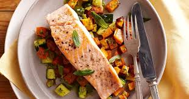

Salmon and Sweet Potato

The image shown above shows salmon with sweet potatos and mixed
vegetables. The information below will show the list of ingredients
and the instructions in order to cook it.
Ingredients
- 500g of salmon
- 500g of sweet potato
- 500g of mixed vegetables including peas, carrots and sweetcorn
- lemon
- mayonnaise
Directions
- Place the salmon on to the frying pan with the skin facing
upwards. Fry the salmon for a minute then flip the salmon
so that the skin is making contact with the pan and fry it
for 7 minutes. Place cover over pan.
- Slice sweet potato into chunks and boil it for 20 minutes.
- Boil mixed vegetables for 5 minutes.
- Mix mayonaise with lemon to make the sauce.